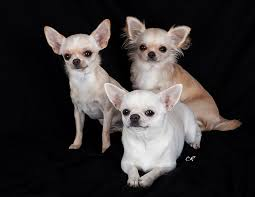

Razas Pequeñas
Entre las razas de perros pequeños, el Chihuahua, el Pomerania y el Yorkshire Terrier son populares.
Estos perros son perfectos para vivir en apartamentos o en espacios pequeños.
Aunque son pequeños, tienen grandes personalidades.


Los perros pequeños requieren menos espacio, pero necesitan mucho amor y atención.